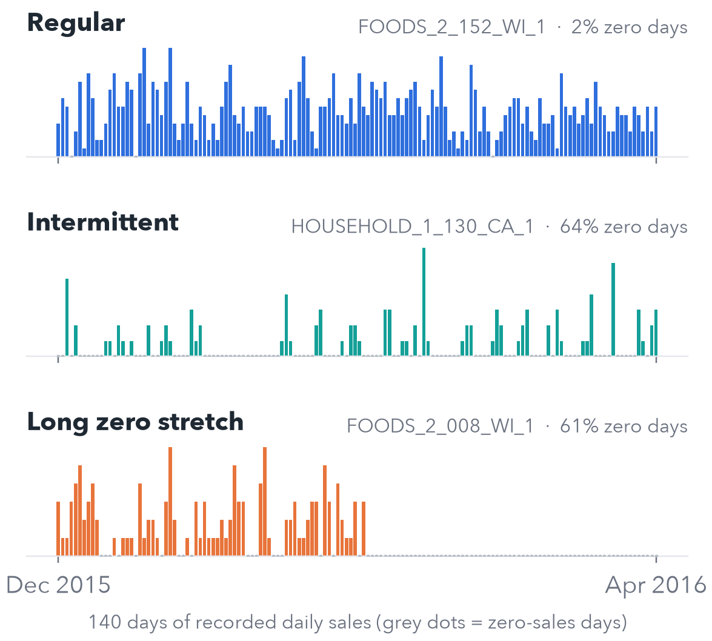
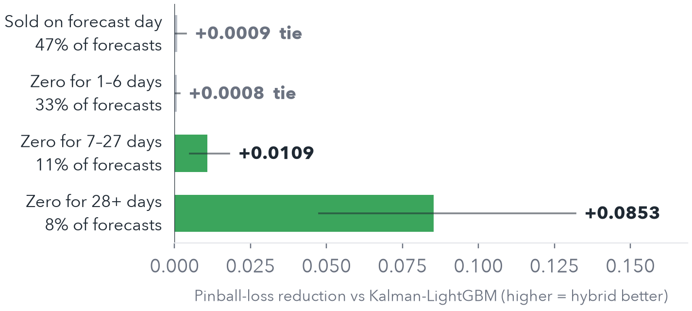
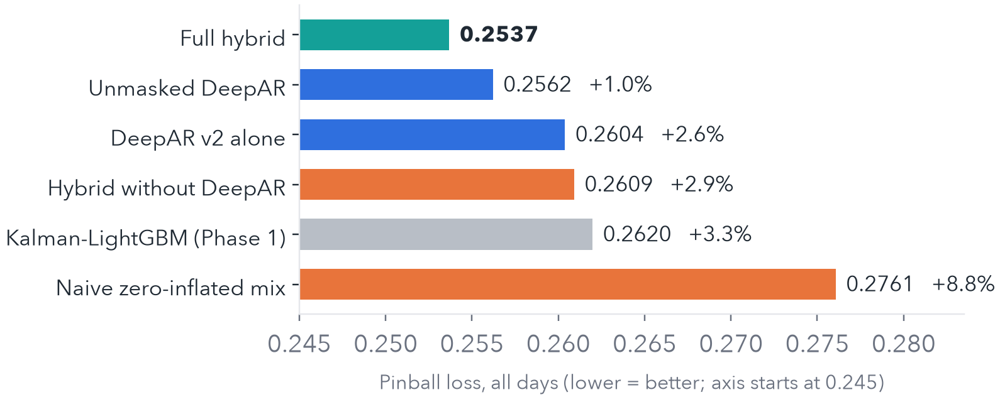
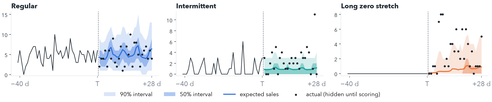

A recorded zero can mean “nobody wanted it”, or “it was not on the shelf”. One model struggles to learn both.
Recent sales · lags 1, 7, 14, 28 · rolling means · current zero-run length
Average gap between sales · non-zero rate · statistics of past zero runs
Day of week · month · events · SNAP days · price and price changes · forecast horizon
Store, department and category identifiers · learned series embeddings (product age was tested and not adopted)
Learns shared patterns across products and predicts a full probability distribution of sales.
Asks one question: will recorded sales be zero on this future day?


A leak-safe pipeline that compares statistical, machine-learning and deep-learning forecasters on identical cells.
The Phase 2 hybrid cut overall recorded-sales error vs Phase 1 Kalman-LightGBM: WAPE −4.7%, pinball −3.3%.
The gain sits in persistent zero-sales runs. On more regular demand, Kalman-LightGBM stayed stronger.
